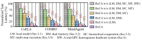

Each successive configuration lowers task latency.Normalized to the configuration with all five optimizations removed.

Read left → right within each group: more optimizations are enabled. The percentages annotate cumulative runtime reductions.